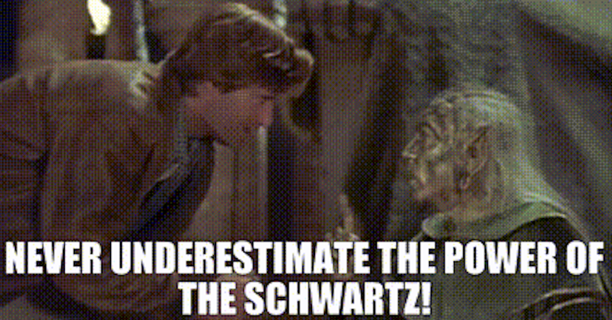

Thinking About California and Paris: Challenges to Sociology
There is a famous family dispute in cultural evolution between Californians and Parisians.
On one side, the Californians (such as Richerson, Boyd, or Henrich) propose that culture evolves through a competition among different ideas, beliefs, and practices (what they call “variants”). Cumulative culture, as they call it, rests on people (relatively faithfully) copying others, with selection processes doing the heavy lifting in the process. Put differently, cultural evolution is
a process of selection between different variants (e.g. beliefs, ideas or artefacts) or models (referring to people from whom one can copy) (Acerbi and Mesoudi 2015, 483).
On the other side, the Parisians (like Sperber or Morin) propose that cultural evolution does not require strong imitation or high copying. Instead, we constantly reconstruct what we learn from other people. And yet, there is still a surprising amount of convergence out there with similar bits of cultural objects, simply because they fit to some of “our mind’s proclivities” (Morin 2016, 450). According to this framework, these proclivities act like gravitational forces: even with noisy copying, ideas keep being pulled in similar directions to similar tensions or innovations.1
1 The picture is more complicated when you factor in content biases or guided variation (see Acerbi and Mesoudi 2015), but I will stick to this dualism because (a) it captures fundamental positions and (b) it is rather pretty.
2 See here for another debate.
I believe that cultural evolutionary debates, once again2, carry fundamental implications for the discipline of sociology. You can already see why these two orthogonal axes (what I’ll call transmission and directionality) matters for us: the former makes social stability an emergent property of strong imitation; the latter makes it a result of a set of universal cognitive tendencies.
I will argue that this (radically) simplified difference, epitomized as transmission and directionality, speaks right to the heart of the core sociological doxa: the causal primacy of social life.
 |
|---|
| The Causal Primacy of Social Life |
Looking for the Ghost of Durkheim in California
In The Elementary Forms of Religious Life, possibly the signature text of sociological imperialism, Durkheim argues that categories—pure concepts of understanding—are, in fact, the product of man. Far from being built into human nature, the argument goes, human categories, even those that help us divide the left and the right3, have their origins in society.
3 Of spatial directions, mind you, not the Left and the Right.
Consider a simple thought experiment to flesh this out. Three toddlers are (with a social science magic) hanging out on an island. They have ordinary perceptual capacities, but no shared language, institutions, or instructors. If categories are indeed social in origin, then before a “society” forms, these toddlers will have certain perceptions and proto-concepts, but will lack properly standardized cultural schemas. As interactions deepen (because, hey, why not?), pressures for coordination and disputes over resources and authority will force solutions to emerge. Through ritual, sanction, and pedagogy, those solutions will be codified into social templates for categories, anchored in a specific place and time, and faithfully preserved across generations.
But what kinds of solutions do we end up with? If we keep mercilessly sending different toddlers to different islands, how do we get a green, a blue or a grue?4
4 I’m using these simply to denote arbitrary outcomes, or, say, the way a color wheel can be carved up. I like Goodman, but not using these in the same sense as him. I am not the only one to blame, though. Thanks to Andrés Castro Araújo, as he got justifiably mad about this.
Now, selective pressures for having green, blue, and grue, on the one side, and the inculcation of green, blue, and grue via ritual and sanctioning, on the other side, are tight frameworks, but they do not explain why we end up with green, blue, and grue. Why not, say, bleen? While the transmission forces for existing schemas show strong rationales, the directional emergence of these schemas are missing from the picture. Keep sending the same toddlers to the same island thousands of time and you may end up with blues, greens, and grues because of path-dependent processes.
The Parisian stance provides an answer. If cultural convergence can emerge from cognitive proclivities that precede and constrain the social, then there may be multiple, but perhaps universal, equilibria, such that certain social patterns are bound to repeat. This implies that large classes of cultural practices are not freely constructible by social processes: intuitions about contamination will make some purity concerns persistently salient, heuristics about allocation will scaffold particular distributive ideologies, story grammars will push narratives toward the familiar plots, or certain value structures (looking at you Schwartz) will seamlessly emerge universally across cultures.
 |
|---|
| Spaceballs (1987) |
Whatever Happens to Sociological Imagination?
The Parisian view poses a fundamental challenge to what we may call sociology’s foundational “doxa,” the notion that “the social” has explanatory primacy over individual psychology and cognitive universals. The “sociological imagination” as C. W. Mills conceived it depends precisely on the idea that what appears to be individual or psychological is actually socially determined. But if the account from the Parisians is right, this flips the explanatory hierarchy that we imposed on ourselves: the cognition becomes, at the very least, a strong constraining force on anything social.
If cognitive directionality is indeed powerful, many “social constructions,” as we call them, are better conceptualized as socially-selected-realizations-of-cognitively-privileged-structures.
This is a bit funny to think about, as it essentially asks for “social theory” to return to its pre-Durkheimian origins on obsessively thinking about human nature and social determination. The fact that Durkheim bracketed these issues was a disaster, as he essentially killed the question of how social formations can fundamentally emerge from universal processes. If this is indeed true, it means that sociology’s foundational move toward explanatory independence may have been, paradoxically, a constraint on our explanatory power. Cultural evolution may give us the right tools.